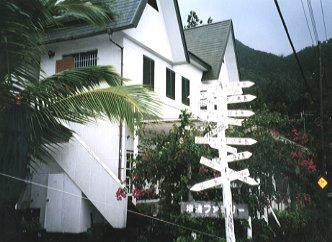
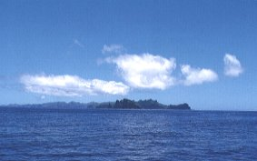
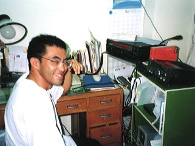
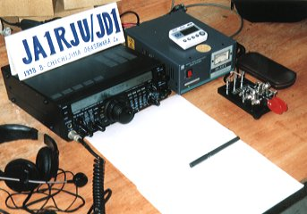
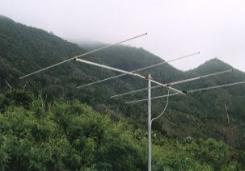
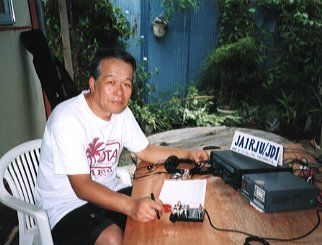

小笠原・父島から運用
7J1YAM & JA1RJU/JD1

OGASAWARA(Chichijima) Is.
(1998 Aug.24〜Sep.4)
OGASAWARA(Chichijima) Is.
(1998 Aug.24〜Sep.4)
|
【運用の目的】
8月24日から8月29日の日程で、小笠原・父島(JD1)からの運用が決まった。
きっかけは、毎年ハムフェアにDXCCのQSLチェックで来日する、ARRLのK5FUV(Bill Kennamer)の小笠原行きに同行する話からだった。
◎ 7J1YAM Operating Team
K5FUV/7J2ADX "Bill" Kennamer
JA1BK/JD1 "Kan" Mizoguchi
JA1RJU/JD1 "Kazu" Ogasawara
JK7TKE/JD1 "Koji" Fukui
【運用場所】
8月24日午前10時、芝浦埠頭を出発した小笠原海運の「おがさわら丸」は、翌日の朝、約25時間の船旅の後、小笠原・父島の二見港に無事到着した。
父島での滞在先、兼7J1YAMの設置場所となる「境浦ファミリー」のオーナーの遠藤さんの出迎えを受け、二見港から3Kmほど離れた境浦に向かう。
  境浦ファミリーと門前の方位標識
われわれには、本館から50mほど離れた二棟の"離れ"が提供された。
しかし、うっそうと茂る樹木に囲まれた建物を眺め、
想像していた以上にアマチュア無線の運用には条件の悪い場所であることに正直なところガッカリ。
「何処にアンテナを建てたらいいの？」と言うのが全員の第一印象だった。
 小笠原・父島
【滞在延期】
約一週間の予定だったJD1(Ogasawara Is)での運用は、父島近海で発生した台風4号の接近で「おがさわら丸」が台風を避けて一日早い出港が決まり、
われわれのスケジュールも大幅に変更される事となった。 【6mでの運用】
6mの運用は、EMEのスケジュールの後に予定していたが、結局運用出来たのは台風通過後の9月に入ってからだった。 【小笠原での6m事情】
小笠原・父島に滞在中、6mにQRVしているJD1BIA・田久保 洋さんにお世話になった。
父島は民家が集中している西海岸沿いの二見港付近からは、本土に対して300m程の山越えとなり条件は良くない。
6mがオープンすると車で見通しの良い場所まで移動して、運用していると言うのもうなずける。
 父島のJD1BIA・田久保さんのシャック
【6mのQSO局】
Esシーズンをはずれた小笠原での50MHzのオープンはローカルのJD1BIAを除き全て9月2日にQSO。
8/30 JD1BIA
8/31 JD1BIA
9/2 JA1WLO BV2PU
JA1WLO(SSB) VR98LC
JA1BWA JA5FFJ
JR2HCB VK4BRG
JA2DDN VK4FNQ
JE2DWZ VK4APN
JR6GV V73AT(CW)
JR6GV YB0ARA/9
JR6BU V73AT(SSB)
【JA1RJU・小笠原 一夫】
  JA1RJU/JD1の設備(FT-847)／6m 4EL（HB9CV）
 
運用するJA1RJU/JD1／JK7TKE/JD1 |
 |
JD1YAM EME CLUB |
 |
Ogasawara Is. |
 |
Flash ! DX |